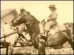
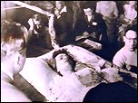
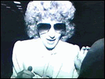
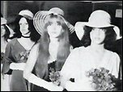
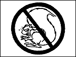

CONTENTS
It was 1950, in the early, heady days of
Dianetics, soon after L. Ron Hubbard opened the doors of his first organization to the
clamoring crowd. Up until then, Hubbard was known only to readers of pulp fiction, but now
he had an instant best-seller with a book that promised to solve every problem of the
human mind, and the cash was pouring in. Hubbard found it easy to create schemes to part
his new following from their money. One of the first tasks was to arrange
"grades" of membership, offering supposedly greater rewards, at increasingly
higher prices. Over thirty years later. an associate wryly remembered Hubbard turning to
him and confiding, no doubt with a smile, "Let's sell these people a piece of blue
sky."
Acknowledgments
Preface - by
Russell Miller
What Is
Scientology?
PART 1:
INSIDE SCIENTOLOGY 1974-1983
1. My
Beginnings
2. Saint
Hill
3. On to
OT
4. The
Seeds of Dissent
PART 2:
BEFORE DIANETICS 1911-1949
 1. Hubbard's Beginnings
2. Hubbard in the
East
3. Hubbard the
Explorer
4. Hubbard As
Hero
5. His Miraculous
Recovery
6. His Magickal
Career
PART 3:
THE BRIDGE TO TOTAL FREEDOM 1949-1966
 1. Building the Bridge
2. The Dianetic
Foundations
3. Wichita
4. Knowing How to
Know
5. The Religion
Angle
6. The Lord of
the Manor
7. The World's
First Real Clear
PART 4:
THE SEA ORGANIZATION 1966-1976
1. Scientology at Sea
2. Heavy Ethics
3. The Empire
Strikes Back
4. The Death of
Susan Meister
5. Hubbard's
Travels
6. The Flag Land
Base
PART 5:
THE GUARDIAN'S OFFICE 1974-1980
 1. The Guardian Unguarded
2. Infiltration
3. Operation
Meisner
PART 6:
THE COMMODORE'S MESSENGERS 1977-1982
 1. Making Movies
2. The Rise of
the Messengers
3. The Young
Rulers
4. The Clearwater
Hearings
5. The Religious
Technology Center and the International Finance Police
PART 7:
THE INDEPENDENTS 1982-1984
 1. The Mission Holders' Conference
2. The
Scientology War
3. Splintering
4. Stamp Out the
Squirrels!
PART 8:
JUDGMENTS 1984-1990
1. Scientology at
Law
2. The Child
Custody Case
3. Signing the
Pledge
4. Dropping the
Body
5. After Hubbard
PART 9:
SUMMING UP
1. The Founder
2. The
Scientologist
3. Fair Game,
Ethics and the Scriptures
Epilogue
Bibliography
List of
Abbreviations |